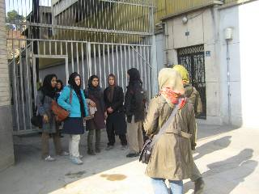
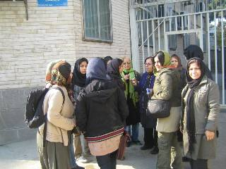
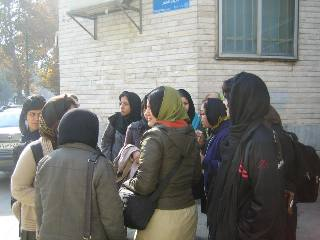

|
|

پیگیری فعالان زن در مورد نسرین ستوده ادامه دارد؛ مراجعه به قوهی قضاییه برای دیدار با مسئولان
دو شنبه13 آذر 1391
تغییر برای برابری: فعالان حقوق زنان امروز دوشنبه 12 آذر ماه، در ادامهی حرکت دیروز خود، برای پیگیری وضعیت نسرین ستوده وکیل و مدافع حقوق زنان به قوه قضاییه مراجعه کردند. به گفته یکی از این فعالان بعد از ورود به اداره کل دبیرخانه قوه قضاییه به سه نفر از آن ها اجازه دیدار با کارشناس این اداره داده شد. کارشناس مزبور که به گفتهی مراجعان برخورد مناسبی نیز با آنها داشته ضمن شنیدن ابراز نگرانی آنها از وضعیت سلامتی نسرین ستوده، مقدمات دیدارشان با نوری معاون رئیس سازمان زندانها را فراهم کرده است.

نوری به این فعالان که خواستار انتقال نسرین ستوده به یک کلینیک تخصصی جهت مداوا و درمان بودند گفت که فقط آقای خندان به عنوان یک شخصیت حقیقی و عضو خانواده، می تواند چنین درخواستی از قوه قضاییه داشته باشد و این فعالان نمی توانند چنین تقاضایی داشته باشند. نوری نامه ای را که جمعی از فعالان زن خطاب به ریاست قوه قضاییه نوشته بودند برای ثبت و تحویل به لاریجانی نپذیرفت.

او همچنین در ادامهی صحبتهای خود متذکر شد که بهداری زندان اوین به وضعیت جسمانی نسرین ستوده رسیدگی می کند اما فعالان ابراز کردند که در حال حاضر به اعضای بدن خانم ستوده به علت اعتصاب آسیب های جدی وارد شده و باید به یک بیمارستان تخصصی منتقل شوند.

در این دیدار همچنین فعالان خواهان رسیدگی به خواسته های این وکیل یعنی رفع ممنوعیت خروج از کشور مهرواه و سایر خواسته های به حق وی در ارتباط با ملاقات حضوری و تماس تلفنی با فرزندانش شدند. آنها اعلام کردند که در روزهای آینده مراجعات خود را به مراجع ذیصلاح ادامه خواهند داد.
خبر در سایت تا قانون خانوادهی برابر
خبر در سایت کانون زنان ایرانی